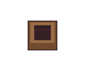

Lost : Un jeu en 2D Top Down avec Phaser !
Michel est un détective qui enquête sur la disparition de son frère, John. Alors qu'il avait trouvé une piste, il se fait attaquer et se réveille dans un myserieux endroit...
Vous allez donc devoir aider Michel à mettre la lumière sur son agression et retrouver son frère, pour ce faire il faudra collecter ses souvenirs en explorant le lugubre lieu..
Mettre en pause : Touche P
Objectif : Collecter les 
Crédits musique
Atmosphere by Naoya Sakamata | https://www.youtube.com/c/NaoyaSakamataPIANOmusicChannel/ Music promoted by https://www.chosic.com/ Licensed under Creative Commons: Attribution 3.0 Unported (CC BY 3.0) https://creativecommons.org/licenses/by/3.0/